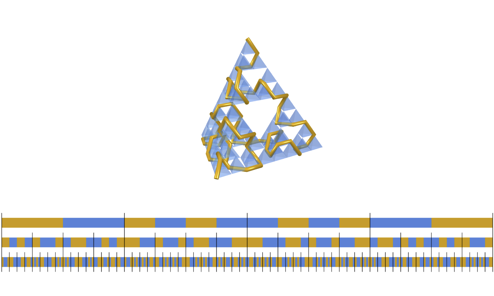
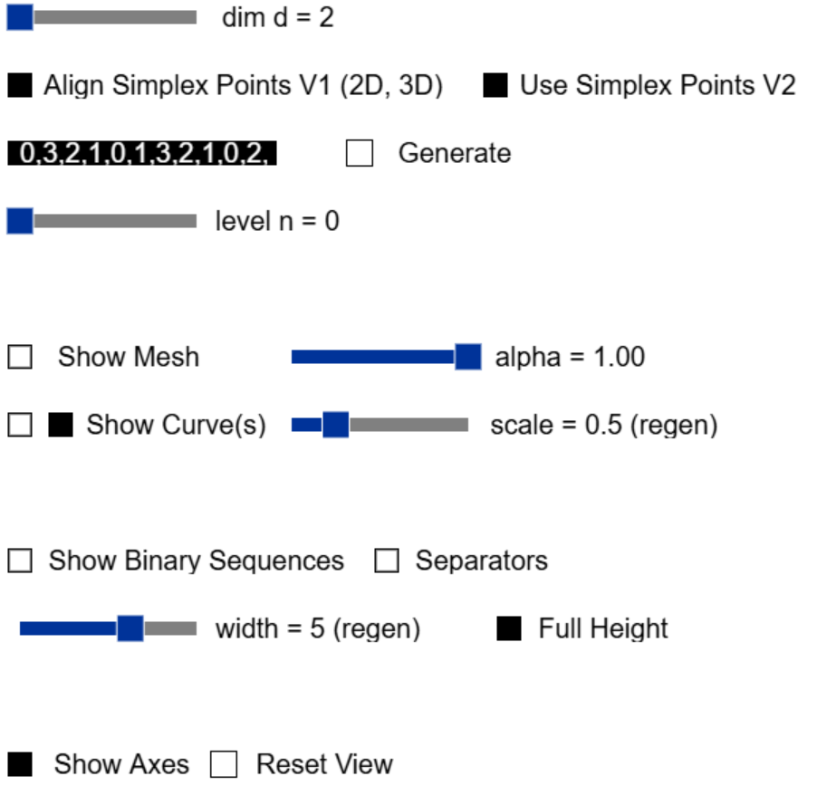

d-Arrowhead Curve
This demo allows to generate a Sierpinski d-simplex and d-Arrowhead curve, both as extensions to arbitrary dimension of the Sierpinski triangle and arrowhead curve, respectively. The overall procedure uses reproduction rules for the d-arrowhead curves and they are visualized via binary sequences.
The demo runs as web-application. After launch the settings can be toggled using y on the keyboard and they look like:

The following list describes the settings:
- dim is a slider controlling the dimension and ranges from 2 to 7.
- Align Simplex Points V1 (2D, 3D) is a checkbox which aligns the last point (for 2- and 3-simplex) with the up-vector (y-direction) via rotations. By definition the first d simplex points are the standard basis and the (d+1)-th point lies on the line with direction (1,...,1). Aligning them provides a more natural placement of such simplex on its bottom and allows a more comfortable rotation via mouse.
- Use Simplex Points V2 is a checkbox which uses another approach to generate simplex points for a regular d-simplex. In this it incrementally embeds existing points one dimension higher, lowers the last coordinate of those points, and finds a new point along the new coordinate axis (in positive direction), s.t. all points have the same distance to the origin.
- The input field takes a list of integers separated by commas representing a reproduction rule. An example for such rule in dimension 2 is: 0,2,1,0,1,2,1,0,2. When the respective dimension is selected (via the dim slider) then button Generate creates the Sierpinski simplex, arrowhead curve, and binary sequences for the specified dimension and rule.
- level is a slider to determine the number of steps the reproduction rule is applied.
- Show Mesh as checkbox allows to show/hide the Sierpinski simplex and alpha as a slider controls its transparency.
- Show Curve(s) as checkboxes allow to show/hide the arrowhead curves shown as greased line (left) and/or tube (right). They thickness can be controlled via the slider scale.
- Show Binary Sequences and Separators are checkboxes toggling the visualization of binary sequences and separators between elements, respectively. The slider width controls the overall width of the visualization and Full Height as checkbox provides a scaling directly placing the sequences above each other for better comparison.
- Show Axes and Reset View as checkboxes allows to show coordinate axes and reset the overall view to the default value, respectively.
Rotation and translation in the scene can be achieved by holding the left mouse or right mouse, respectively. The mouse wheel allows to zoom in and out.